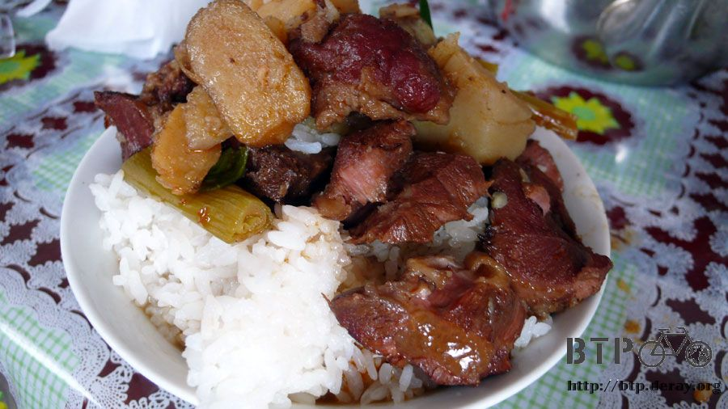
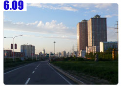

達坂城的姑娘
能在這個涼快的城鎮多待一天真是一件幸福的事情，達坂城的介紹說這裡離烏魯木齊或是吐魯番都是九十公里的路程，
交通非常方便，距離九十公里之遠還叫方便？但也因為這樣，讓這裡成為山谷之間的寧靜小鎮，和避暑的好去處。
午餐在早餐店吃，本來只點了一碗哨子麵，但是看到隔壁桌的人吃一種很好吃的餅，就跟店員說我也要吃那個，
原來是蔥花餅，配上醃漬的很清淡的黃瓜絲、蘿蔔絲和洋蔥絲，好吃的讓人忘了這碗麵的存在。

這邊還有供應奶茶，我以為是西藏風味的那種酥油茶，結果只是很一般的奶茶，所以就沒點。
吃飯的時候跟店裡的廚師確定一下從達坂城往烏魯木齊的路，騎自行車到底有沒有辦法過得去。
『總之不好走，但是風沒有三十里風口那邊那麼大，你趁早上風小的時候走，應該過得去。』
一早的市集就已經很熱鬧，看來一整天都會像這樣子熱鬧下去，等晚一點再來逛。

早上就看到拍賣小乳牛的畫面，最後成交了，小乳牛是被拖著走的，不肯離開本來的主人。
回招待所牽出小多，招待所外頭只有一個小看板，但是裡面可是別有洞天的開闊，偌大的院內，我的房間在最角落裡。

離開鎮上之前，果真看到很多賣大豆的店，大豆可是達坂城的名產。

達坂城這裡有很寬廣的大草原，跟四周都是寸草不生的山脈相比顯得特別珍貴。
草原上放牧了各種吃草的動物，所以這裡也盛產牛奶，就會有像是奶茶、酸奶酪這些商品出現。

非常幸運的，我在達坂城的這一天是星期五，今天正好是每周一次的市集日，非常的熱鬧，各式各樣的小販都有，光是用看的就很開心！
下午兩點，騎著小多開始我的達坂城閒晃之旅，先從達坂鎮往古城的方向騎。
草原真是好久不見的景色，還有黃澄澄的油菜籽花田在大風中搖曳著。
風延續昨天那樣的狂吹，往古城的路上，小多是不需要踩踏板自己就會被風吹著跑，我只要控制方向和按煞車就可以了。
樹都被吹到彎腰低頭，這麼大的風到底是從哪座高山吹下來的呢？

達坂鎮離達坂古城不遠，十多分鐘就到了，本來只想到門口看看，但是票價不貴，而且自行車可以進來，所以就買票來參觀。

基本上達坂城是一座千年古城，從唐朝至今，但是除了城牆仍保留著，其它都已經因戰亂和時間的消磨而不復見。
在以前的達坂城外頭有一個白水鎮，現在的遊覽區就將白水鎮給復古的重建出來，還蠻像一回事的。


小小的鎮房屋不多，每一棟都有自己的特色，賣一些紀念品還有當地的名產，以及寫了『達坂城的姑娘』這個歌的王洛賓先生紀念館。


其實我從來沒有聽過『達坂城的姑娘』這首歌，看著歌詞和樂譜我也完全不知道該怎麼唱。

試著哼的時候，就被酒肆的老闆呼喚過去，我在酒肆裡喝了一杯紅葡萄酒，酒精濃度極低，喝起來像是果汁，但是挺不錯喝的。


順便請老闆播這一首『達坂城的姑娘』讓我聽一下到底是怎麼唱的。
這首歌的歌本來是維吾爾族的民歌，王洛賓先生將它重新編詞編曲，歌詞如下：
『達坂城的石路硬又平，西瓜呀大又甜，那裡住的姑娘辮子長呀，兩隻眼睛真漂亮。
妳要想嫁人，不要嫁給別人哪，一定要妳嫁給我，帶上百萬錢財，領著妳的妹妹，趕看哪馬車來。』
配隨著輕快的吉他聲，是一首非常快樂的民謠，第一次聽會覺得有點好笑，但是越聽心情越開朗。

在酒肆喝完了葡萄酒，小多就留給酒肆的老闆和王洛賓先生紀念館的員工去打量。
我則簡單瀏覽了一下紀念館，稍微了解王洛賓先生是什麼樣的一個人，真謝謝他改編的這麼多的新疆民謠，
雖然已經逝世的他，仍留傳了無數的好音樂給後人，包含這首幾乎人人都會唱的『達坂城的姑娘』。
當我跟酒肆老闆說我沒聽過這首歌，請他播給我聽一下的時候，他那驚嚇的表情，說明了怎麼可能生為人卻沒聽過這首歌。
這邊也有一間大豆店，歌詞中雖然說達坂城的西瓜大又甜，可是達坂城不產西瓜，市場賣的西瓜都是從土魯番來的，
這邊的主要農產品是大豆，加工製成各式各樣的農產品，各種的口味，蒜味、麻辣、草莓、水果，

各式各樣的口味都有，很像哈利波特裡的全口味豆。還有一種叫做『怪味大豆』，吃之前先問老闆娘這個真的能吃嗎？
閉著眼睛吃了一粒，發現味道一點也不怪，就是烤羊肉串的味道呀，我買了一小包的水果大豆，又酥又脆又香又營養。
千年以前的古城，如今只剩下城牆，看來除了用繩子圍起來說禁止攀爬之外，沒有做任何的保護措施，

再過千年這座城終將煙消雲散吧，又或者千年之後整座古城會以不可思議的科技全部重建出來也說不定。
這裡有一些帳篷，裡頭真的可以住人，走在木板釘的小路，小草都從細縫中冒出頭來，這裡還有一個『送子泉』。
風很大也很涼，頭髮都被吹得亂七八糟的，旅行了一段時間，頭髮越長越長，有點不方便整理，
等等回鎮上之後找一間髮藝重新理回平頭比較清爽。
回鎮上之後，在所住的招待所隔壁就是髮藝店，還沒問多少錢就先請店員幫我剪髮。

剪頭髮之前先洗頭，然後問我想剪成什麼樣子，『越短越好，風怎麼吹都不會亂的那種，但是不要剃成光頭。』
十分鐘之後我的頭就剪好了，無比的清爽自在，摸著短短的頭髮，有一種發自內心的愉悅感。
在剪頭髮的時候，跟是當地人的店員聊天，原來達坂鎮的人自己不吃大豆的，那種那麼多給誰吃呀？
店員笑著笑說『種給你吃呀。』
依她的說法，達坂鎮是一個很無聊的地方，不熱鬧，什麼都沒有，賺不了多少錢，也沒地方可以花錢。
這樣不是挺好的啦，不用煩惱沒有錢花，因為有錢也沒地方可以花。
頂著新髮型，趁市集還沒有收攤之前去逛一逛，不愧是一星期一次，所以還算達坂鎮的大事，整個市集都很熱鬧。
先買一大包像是餅乾的東西吃，這麼大一包只要一塊錢，更神奇的是這個東西的名字。
『老闆，這是啥呀？』
『爆米花。』
啥米？這是爆米花，爆米花不是一粒一粒、白色的那種嗎？
管它的，就算被騙我也不會吃虧，付過一塊錢買了一大包爆米花，淡淡的甜味，一路邊走邊吃，看到可愛的小孩就分他一起吃。

因為衣服和五金雜貨這些都不是我需要買的東西，所以怎麼買都是在買吃的，
這個是油炸餅，裡面包的是糖膏，甜甜的很好吃。

我被這個攤子的小孩嚇一跳，在我吃油炸餅的時候，他突然問我一句『叔叔，你是不是騎自行車旅行的？』
哇塞，這麼厲害，你怎麼知道？路上有被你遇到嗎？
這個小孩真的很聰明，他光是看我的手指頭曬成黑白兩個顏色，就可以猜到我是騎自行車在旅行。
『你很聰明，將來會是個人物，加油！』
請看，這就是可愛的達坂城姑娘，長長的辮子、漂亮的眼睛，超卡哇伊的呢 :D
來～叔叔請妳們吃爆米花～

聽完了達坂城的姑娘，雖然這邊不產西瓜，但是在達阪城吃西瓜也挺有趣的。
賣西瓜的大叔是維族人，西瓜超級便宜，我吃過最貴的西瓜是在西安，一斤(500公克)要三塊。
最便宜則是在達坂城，一顆(2.5公斤)只要兩塊五，價錢只有西安的六分之一。
這是吐魯番來的西瓜，籽比安西的西瓜要少很多，超甜，果皮是深綠色的，沒有交叉的橫條紋。
老闆很貼心的挑了一顆我吃的完的份量，看著熱鬧熙攘的市集人潮，吃著一口比一口還甜的西瓜。
市集還有賣一些很奇怪的蔬菜，超大顆的紫色洋蔥、泛著綠色的蘿蔔和泛著紫色的蘿蔔，
還有大根的青辣椒，這個東西幾乎每一道菜都會放，一開始我覺以為是青椒所以大口的吃下去，結果超辣的！
晚餐就在市集裡的餐廳大快朵頤，點了紅燒牛肉米飯，中國的東西真是好吃又合我胃口。
再加上口味和台灣的相去不遠，所以即使旅行了四十幾天，也不會想念台灣的食物到睡不著覺的地步，天天都在期待新的美食出現。

今天在達坂城玩得很開心，吃了很多東西，也看了很多漂亮的景色，明天要起一個大早，在風勢還沒增大之前偷偷的溜進烏魯木齊。
繼續閱讀：6.9 新疆人的驕傲

中國-人民幣－ 1：4.3 台幣
6.8 |
總計：90.5元 |
午餐哨子麵、蔥花餅5元、網吧一小時2元、雜貨店巧克力、雪糕、餅乾、薯片、衛生紙15元、達坂城門票30元、紅葡萄酒5元、水果大豆3元、理髮5元、爆米花1元、西瓜2.5元、油炸餅1元、住店8元、晚餐紅燒牛肉米飯8元 |
|